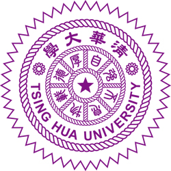

ethanweichengtseng@gmail.com
I am currently an master student in National Tsing Hua University EE advised by Prof. Min Sun. I am interested in Deep Reinforcement Learning, Multi-Agent System, Meta-Learning. Recently, I am also working with Prof. Phillip Isola on offline learning in multi-agent scenario. Previously, I joined the project working on adapatation approach in multi-agent reinforcement learning, supervised by Dr. Da-Cheng Juan and Dr. Wei Wei.
I am looking for visiting opportunity as well as PhD position.
[CV] [GitHub] [Twitter]| Sep 2019 - Present | VSLab @ NTHU, Research Assistant
Advisor: Prof. Min Sun |
 |
| July 2018 - Oct 2018 | MediaTek, Internship |
Reimplementation for Gradient Surgery for Multi-Task Learning in PyTorch. [code]
This repository provide code of mulit-agent framework on unity ml-agent. [code]
| Aug 2021 | NovaTek Scholarship
Awarded to students with outstanding research ability |
| Apr 2021 | The Phi Tau Phi Scholastic Honor Society Honorary Membership
Awarded to students with outstanding research ability |
| June 2019 | Dr. Mei Yi-Chi Memorial Prize
Highest honor for newly graduated students at NTHU |
| Dec 2018 | Pan Wen Yan Foundation Scholarship |
| Mar 2017 | The Zhu Shun Yi He Qin Scholarship |
| Mar 2017 | Summer Oversea Experience Scholarship |
| 2016, 2017, 2018, 2019 | Academic Achievement Award |